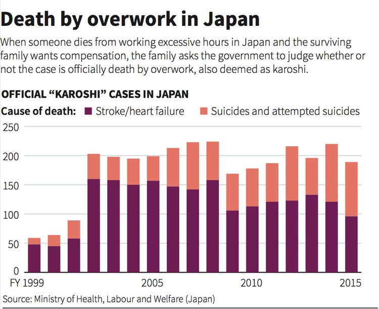
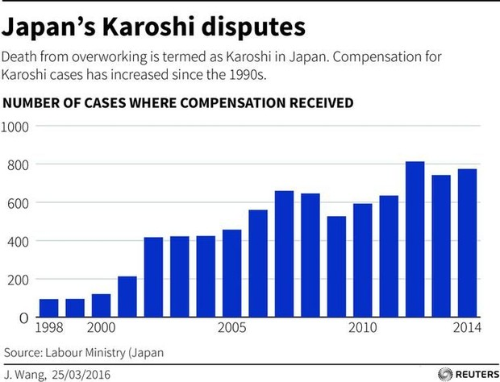

Statisically, a survey concluded that a quarter of adults aged 20-30 years in Japan old are virgins. In a more literally sense, Japan's cut their population output by almost a quarter. This leads to the prediction that about 30% of population disappear 2060 if this trend keeps up, something that if left untreated, could be catastrophic.
Along with this, there has been a surge in the production and consumption of artifical romantic and sexual products, which not surprisingly, correlates with the decrease of ACTUAL and PHYSICAL relationships.
On the left, this graph shows not only the declining to births in Japan, but how this actually varies directly with the decrease in marriages as well. Further more, the amount of deaths in Japan has actually increased as well, decreasing the population even further.
/* Graph 2*/ This graph shows the sudden burst of karoshi's in the 21st century, where the increase of work and unemployment was also found to suddenly rise. This is so common that it has its own name: karoshi.
/* Graph 3*/ Similar to the previous graph, this not only shows the increase of karoshi's within the country, but also the increase of government compensation required to these suicides. Karoshi in Japan is acknowledged by the government through compensations, but minial effort is done currently to reduce the number
Taking at the table below, you can see the percentages of economic impact on suicide (2015)
/* Percent table */| Occupation | Percent | "Not Employed?" |
|---|---|---|
| Employees | 28% | No |
| Self Employed/Family Work | 7% | No |
| Students | 3% | No |
| Unknown | 2% | No |
| Pensioners | 26% | Yes |
| Homemakers | 6% | Yes |
| Unemployed | 4% | Yes |
| Living off intrest | 0.2% | Yes |
| Homeless | 0.1% | Yes |
| Other | 23% | Yes |